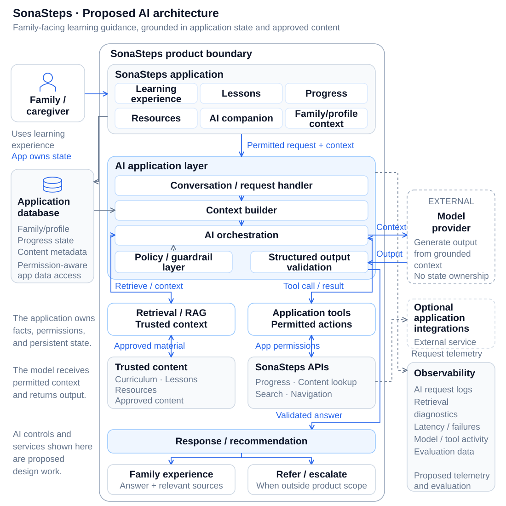
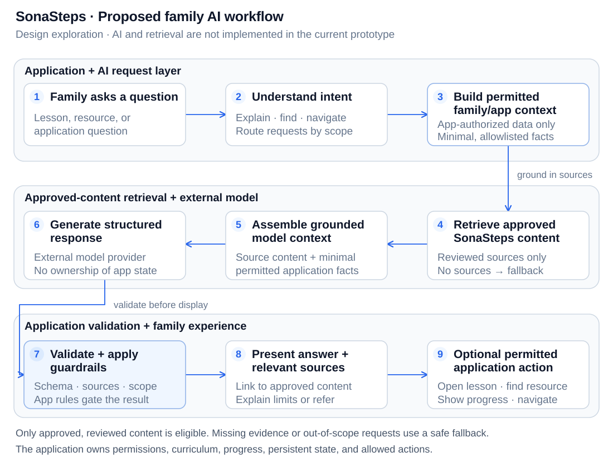

Overview
SonaSteps is designed around families and caregivers of children who are deaf or hard of hearing (DHH). The product brings educational information, practical activities, resources, and caregiver practice history into one structured experience.
The AI product question is specific: how can AI reduce the searching, interpreting, and translating families have to do while working through specialized learning material?
Current prototype and planned AI
Implemented in source: family profiles and preferences; browsing, searching, and saving activities and guides; deterministic activity suggestions; routine-based quick help; and saved caregiver practice attempts, optional reflections, and Journey history.
Backend implementation: authentication, account persistence, and ownership controls exist in source. Hosted database deployment and actual authentication delivery remain unverified.
Planned / exploratory: the family AI companion, RAG, model calls, structured responses, AI guardrails, and AI evaluation and observability. The diagrams below describe this proposed architecture.
Current educational materials are draft/demo content requiring professional and language review. Journey reflects caregiver practice; it does not measure a child’s development or mastery.
The Problem
Families may encounter unfamiliar terminology, developmental concepts, educational material, activities, and recommendations. Reading a lesson does not always make its practical meaning clear.
A parent or caregiver may still be asking:
- What does this mean?
- Why does this matter?
- Can you explain this more simply?
- Can you give me an example?
- How can we practice this during everyday life?
- What have we already worked on?
- What should I look at next?
- Where can I find information about this?
- How does this relate to another lesson?
The AI exploration focuses on the gap between information and practical understanding. Its intended role is educational explanation and content discovery.
Product Approach
The foundation remains structured software. The current prototype already stores family preferences and practice records and uses deterministic logic to suggest activities. AI would add language-based assistance to that foundation.
In the target architecture, the application owns users, authentication, permissions, family profiles, curriculum structure, lessons, progress, content relationships, application state, authorization, persistent data, and deterministic workflows.
AI would help with explanation, retrieval, summarization, contextual examples, and conversational navigation. Application services would continue to enforce permissions, validate actions, and persist facts. The model has a bounded role in a larger product.
Where AI Helps
Planned family-facing AI capabilities
These six capabilities describe the proposed AI experience. They are design work, with approved content and appropriate controls required before release.
01 · EXPLAIN
Explain
Would explain terminology, lesson concepts, and educational information in clearer language, using approved material.
“Explain this without the technical terminology.”
“Give
me an example of what this could look like at home.”
02 · ASK
Ask
Would answer natural-language questions about SonaSteps educational content. Retrieval would provide relevant approved sources and the answer would link back to that content.
03 · PRACTICE
Practice
Would translate approved lesson concepts into everyday examples for play, meals, reading, getting ready, and family routines. Generated examples must stay within reviewed educational material.
04 · NAVIGATE
Navigate
Would help families find relevant lessons, resources, and previously explored concepts without requiring an exact term or knowledge of the navigation structure.
05 · UNDERSTAND PROGRESS
Understand Progress
Would explain structured practice history and content explored. The database owns those facts; AI would describe them conversationally. Planned lesson-completion features would need explicit application records.
06 · GET HELP
Get Help
Would assist with navigation, account/product questions, finding features, and troubleshooting, with escalation to normal support. Product support is a secondary workflow.
System Architecture
The proposed design separates the family experience, AI request handling, trusted-content retrieval, permitted application tools, and an external model provider. Application services own state and authorization throughout.
Proposed AI architecture
Family-facing learning is the primary path. The model receives bounded context and returns output for application validation.

Open the SVG to inspect labels, or read the diagram description below.
Diagram description
A family or caregiver uses the SonaSteps learning experience, lessons, progress, resources, and proposed AI companion. The application owns family/profile context and persistent data.
A conversation/request handler builds permitted context and passes the request through orchestration and policy controls. Retrieval supplies approved curriculum, lessons, resources, and related content. Permitted tools use SonaSteps APIs for progress, content lookup, search, and navigation.
The external model provider generates a response from the assembled context. The AI application layer validates structured output and applies guardrails before an answer or recommendation reaches the family experience. Questions outside scope follow an appropriate referral or support escalation path.
The application database holds family/profile data, progress state, and content metadata. Proposed AI observability records redacted request/step metadata, retrieval diagnostics, latency, failures, model/tool activity, and evaluation data. Optional application integrations remain bounded external dependencies.
RAG and trusted knowledge
A general-purpose model is not an authoritative source for specialized SonaSteps material. The proposed retrieval layer would select approved curriculum, lessons, educational resources, program documentation, FAQs, and product documentation for the question at hand.
The current materials are draft/demo content. Professional and language review are prerequisites for an approved knowledge base. Content quality, retrieval relevance, permissions, versioning, and source attribution matter alongside model capability. Weak or missing evidence should produce a clear limitation or escalation.
No vector database or RAG service has been implemented. Ingestion, retrieval, and citation handling remain planned engineering work.
Family AI Workflow
The proposed request path keeps family context permission-aware, answers grounded in approved content, and application actions subject to software checks.
Proposed family AI workflow
A question moves through context, retrieval, generation, and validation before the family sees an answer or chooses an application action.

Open the SVG to inspect labels, or read the diagram description below.
Diagram description
Family asks a question → Understand intent → Build permitted family/application context → Retrieve trusted SonaSteps content → Assemble grounded model context → Generate structured response → Validate and apply guardrails → Present answer and relevant source/content → Optional permitted application action.
Permitted actions could open a lesson, find a resource, show recorded practice progress, or navigate to relevant content. Application authorization and business rules would decide whether each action is allowed. The flow excludes autonomous clinical actions.
Deterministic vs. AI Responsibilities
The target boundary assigns durable facts and enforceable rules to the application. AI handles requests whose wording or explanation needs interpretation.
Deterministic application
Owns facts, permissions, and execution:
- Authentication
- Authorization and permissions
- User and family data
- Lesson-completion records, when implemented
- Progress state
- Curriculum structure
- Database writes
- Navigation rules
- Business rules
- Audit state
- Application actions
AI layer
Helps interpret and explain:
- Natural-language understanding
- Explanation and question answering
- Retrieval query generation
- Summarization
- Content discovery
- Contextual examples
- Conversational navigation
- Structured recommendations
Use AI for ambiguity. Use software for guarantees.
A model can interpret a family’s question or explain a concept in different words. Software must decide which records are accessible, validate referenced content and action parameters, preserve progress facts, and control every write. A plausible answer does not establish permission or turn a recommendation into an executed action.
Safety and Trust
These are requirements for the proposed AI implementation. They need verification before the companion is enabled for families.
Grounding and scope
- Use professionally and linguistically reviewed content; show relevant sources where practical.
- Separate educational explanation from professional advice. Avoid diagnosis, clinical decisions, and legal advice.
- Refer or escalate questions that exceed the product’s intended scope. Human expertise remains central.
Family information and tools
- Build permission-aware context from a minimal allowlist of relevant application data.
- Keep unnecessary identifiers and private free-text reflections out of model context and the retrieval corpus.
- Limit tools to defined actions; verify authorization and business rules in application services.
Validation and failure handling
- Validate structured output, source references, content IDs, and action parameters.
- Use bounded failures and fallbacks when retrieval is weak, the model fails, or an action is invalid.
- Log useful failure and timing metadata with redaction and controlled access, avoiding unnecessary exposure of family information.
Educational assistance should work alongside audiologists, SLPs, Teachers of the Deaf, early-intervention specialists, physicians, and other professionals. SonaSteps is not designed to replace that expertise.
Product Support AI
Product support is a secondary planned use of the same request, retrieval, and validation infrastructure. It could help with product navigation, FAQs, troubleshooting, technical issues, finding features, and account/product questions.
A separate product-support path could classify and route support tickets or escalate to normal support. Account access and account changes would remain within authorized application workflows.
Secondary support workflow
- Identify a product-use question or technical issue.
- Retrieve approved FAQs and product documentation.
- Offer a bounded troubleshooting or navigation answer.
- Classify and route an unresolved support request.
- Escalate to normal support when appropriate.
Video Walkthrough
What This Project Demonstrates
The implemented learning prototype and proposed AI design connect product reasoning to software boundaries. The work brings together family-centered product design, accessibility, SaaS architecture, application state, deterministic recommendations, and APIs.
The AI exploration adds RAG and retrieval design, context management, permissions, structured outputs, observability, safety boundaries, and the interaction between deterministic and probabilistic systems. Its portfolio value is the reasoning about those responsibilities and tradeoffs; AI quality and operational results still require implementation and evaluation.
Lessons / Design Principles
- AI is most useful when it reduces a real cognitive burden.
- The model should remain a component of the application.
- Trusted context matters more than access to a powerful model.
- Deterministic systems should own facts and guarantees.
- AI can make structured educational content easier to access while preserving the role of the people who created and teach it.
- The amount of autonomy should depend on the cost of being wrong.
Next Iteration
The AI implementation remains future engineering work. Priorities include reviewed content and source citations; retrieval and answer-quality evaluation; model selection; latency and token/cost management; bounded context; permissions; prompt/version management; observability; failure handling; privacy controls; human escalation; accessibility testing; and structured output validation.
The current deterministic experience should remain usable through AI timeouts, missing knowledge, or rejected output. Backend deployment, live authentication, reviewed educational content, and release verification also remain separate core-product work.